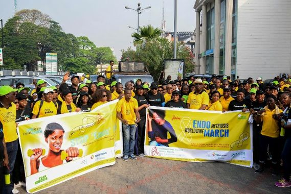
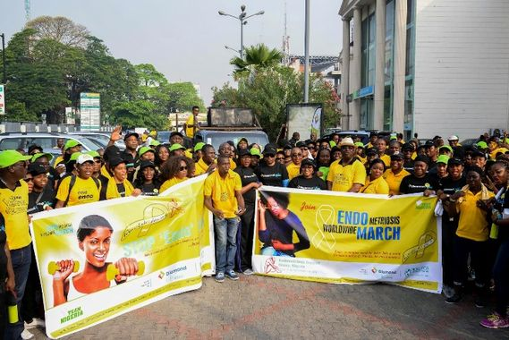

Définition
L’endométriose est une maladie gynécologique fréquente qui touche près de 10 % des femmes. Elle se caractérise par la présence, hors de la cavité utérine, de tissu semblable à celui de la muqueuse de l’utérus.
Elle se définit comme la présence en dehors de la cavité utérine de tissu semblable à la muqueuse utérine qui subira, lors de chacun des cycles menstruels ultérieurs, l’influence des modifications hormonales.
 
